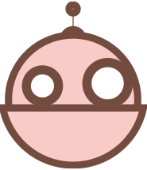

Jsem studentka umění a výtvarná tvorba je pro mě přirozenou součástí života už od dětství. Po základní škole jsem se vydala na Střední školu designu a umění, obor Knižní kultura a ekonomika, se zaměřením na ilustraci, kde jsem začala systematicky rozvíjet svůj vztah ke kresbě a vizuálnímu vyprávění. V současné době studuji grafiku a kresbu se specializací na kresbu na Ostravské univerzitě. Snažím se svůj zájem o umění dále rozvíjet a nezůstávat pouze u jedné techniky či přístupu, ale hledat nové souvislosti mezi tradičními postupy, kresbou a vlastní vizuální řečí.
Máte zájem o spolupráci nebo dotaz?
Prosím ozvěte se mi.
Kontaktní formulář